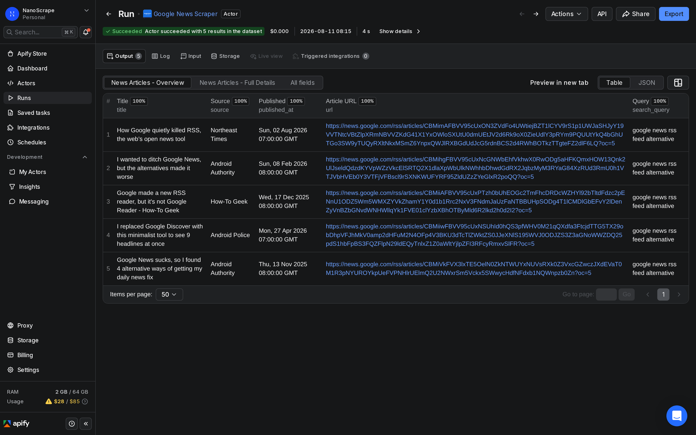
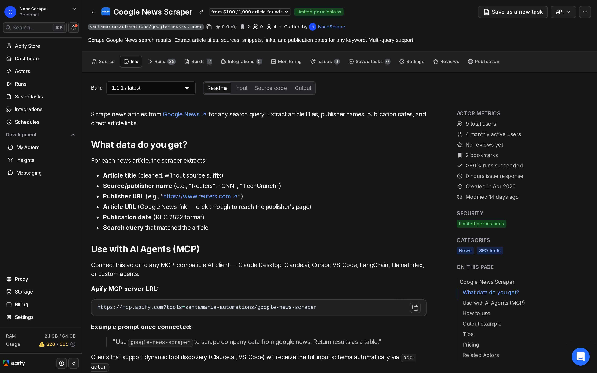
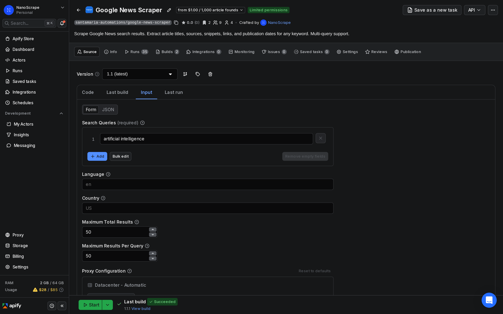
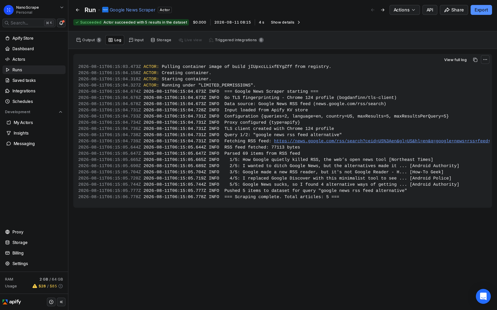

How to Turn Google News into an RSS Feed
Google killed its News RSS feeds in 2014 and never brought them back. If you relied on those feeds to monitor topics, competitors, or brand mentions, you were left with manual checks or expensive media monitoring subscriptions. The NanoScrape Google News Scraper on Apify gives you a direct replacement: you give it a list of keywords, it pulls the Google News results for each one, and you get back a structured dataset with titles, sources, publication dates, and article URLs. Schedule it to run daily and you have a keyword news feed at $0.001 per article, with no monthly subscription.

In this tutorial
- What you get
- Prerequisites
- Step 1: Create a free Apify account
- Step 2: Open the Google News Scraper
- Step 3: Enter your keywords
- Step 4: Run and export the results
- Step 5: Schedule a daily news feed
- Advanced: multi-language and brand monitoring
- Connect to AI agents via MCP
- Key input and output fields
- What it costs
- FAQ
What you get
The NanoScrape Google News Scraper runs on Apify and queries the Google News RSS feed on your behalf. For each keyword you give it, it returns every article Google News surfaces: the cleaned article title, the publisher name, the publisher domain, the publication date in RFC 2822 format, and the Google News link to the article. Results are deduplicated across queries, so if the same article appears for two of your keywords you get one row.
- Article title: cleaned text without the publisher suffix Google sometimes appends.
- Source name: the publisher as Google News lists it (e.g. Reuters, TechCrunch, BBC).
- Publisher URL: the publisher root domain (e.g.
https://www.reuters.com). - Article URL: the Google News link. Clicking it redirects you to the publisher page.
- Publication date: the date and time the article was published, in RFC 2822 format (e.g.
Mon, 31 Mar 2026 14:30:00 GMT). - Search query: which keyword in your list matched this article.
- Scraped at: ISO 8601 timestamp of when the row was collected.
One run gives you a snapshot. Schedule the actor to run daily or hourly and you have a rolling news feed for any set of topics, brands, or competitors.
Prerequisites
- A free Apify account. The free tier gives $5 of monthly credit, enough for 5,000 article records.
- A list of topics, brand names, or keywords you want to monitor. One keyword per query.
Create a free Apify account
- Open the actor page on Apify and click Try for free.
- Sign up with Google or email. The form takes about a minute.
- You land on the actor input form. The $5 free credit is added automatically.
Open the Google News Scraper
After signing in you are on the actor page. The Information tab shows the pricing, all input parameters, and example output. The Input tab is where you enter your keyword list.

Enter your keywords
Click Input in the left sidebar. Add one keyword per line in the Search Queries field. Each keyword runs as a separate Google News search and its results are merged into a single deduplicated dataset.
{
"searchQueries": [
"your brand name",
"competitor brand name",
"industry topic you track"
],
"language": "en",
"country": "US",
"maxResults": 100,
"maxResultsPerQuery": 50
}Key input settings:
searchQueries: your keyword list. Use the exact phrases you want Google News to search. Brand names, product names, topic phrases, and competitor names all work.language: ISO 639-1 language code (defaulten). Controls which language edition of Google News the scraper reads. Usede,fr,esfor non-English markets.country: ISO 3166-1 alpha-2 country code (defaultUS). UseGB,DE,AUto get regional editions of Google News.maxResults: total cap across all queries in a single run (default 100).maxResultsPerQuery: cap per keyword (default 50, max approximately 100). Google News RSS returns up to about 100 articles per query.

Run and export the results
- Click Start at the bottom of the Input tab.
- The run opens automatically. The Log tab shows progress as articles are collected.
- When the status bar shows SUCCEEDED, click Dataset in the left sidebar.
- The table shows one row per article. To download, click Export and choose JSON, CSV, or XLSX.

Each row in the dataset is one article. To process the results programmatically, download as JSON and filter by date to show only articles from the last 24 hours:
const articles = require('./dataset.json');
const yesterday = new Date(Date.now() - 86400000);
const recent = articles.filter(a => {
const pub = new Date(a.published_at);
return pub >= yesterday;
});
for (const a of recent) {
console.log(`[${a.source}] ${a.title}`);
console.log(` ${a.url}`);
}url field is a Google News redirect link, not the publisher URL directly. To reach the publisher page you need to follow the redirect. The source_url field gives you the publisher root domain (e.g. https://www.reuters.com) when you want the site without the specific article path.Schedule a daily news feed
A one-off run gives you today's articles. To keep the feed current, schedule the actor to run on a regular cadence:
- In Apify Console, open the Google News Scraper actor and click Schedules in the left sidebar.
- Click New schedule. Give it a name such as "Daily news feed".
- Set the cron expression. For daily at 7 AM UTC:
0 7 * * *. For every 6 hours:0 */6 * * *. - In the Input field, paste your keyword list as JSON (the same input from Step 3).
- Click Save. Each scheduled run creates its own dataset with a timestamp in the run metadata.
To fetch the latest dataset via the API after each scheduled run:
# Get the most recent run's dataset
curl -s "https://api.apify.com/v2/acts/santamaria-automations~google-news-scraper/runs/last/dataset/items?token=YOUR_TOKEN&limit=50" \
| jq '.[] | {title, source, published_at, url}'Advanced: multi-language and brand monitoring
The actor supports two patterns that are especially useful for more targeted news monitoring.
Multi-language monitoring
To track the same topic across multiple countries or languages, run the actor once per locale with the appropriate language and country parameters. Google News has separate regional editions, so German news about a topic surfaces under language: "de", country: "DE" while the same topic in the UK surfaces under language: "en", country: "GB":
{
"searchQueries": ["your brand name"],
"language": "de",
"country": "DE",
"maxResults": 50
}Brand mention monitoring
To monitor press coverage for a brand or product, add the exact brand name as a keyword. You can include common misspellings or alternate names as additional queries. Because results are deduplicated by article URL, an article that mentions both your brand and a competitor only appears once in the dataset:
{
"searchQueries": [
"YourBrandName",
"Your Brand Name product launch",
"CompetitorName vs YourBrandName"
],
"language": "en",
"country": "US",
"maxResults": 200,
"maxResultsPerQuery": 100
}Connect to AI agents via MCP
The actor works as a Model Context Protocol (MCP) tool. Paste this server URL into any MCP-compatible client (Claude Desktop, Claude.ai, Cursor, VS Code):
https://mcp.apify.com?tools=santamaria-automations/google-news-scraperOnce connected, your AI agent can pull news on demand from natural language prompts:
Find the 20 most recent news articles about "open source AI" from Google News and summarize the top themes.Clients that support dynamic tool discovery receive the full input schema automatically, so the model fills in all fields without manual parameter setup.
Key input and output fields
Input fields
searchQueries(required): array of keyword strings. Each runs as a separate Google News search.language: ISO 639-1 language code (defaulten). Determines the Google News edition.country: ISO 3166-1 alpha-2 country code (defaultUS). Sets the regional edition.maxResults: total article cap across all queries in a run (default 100).maxResultsPerQuery: cap per keyword (default 50, max approximately 100).proxyConfiguration: proxy settings. Datacenter proxy (the default) works reliably for Google News RSS.
Output fields per row
title: the article headline, cleaned (without the publisher suffix Google sometimes adds).source: the publisher name as listed by Google News.source_url: the publisher root domain.url: the Google News article link. Follow the redirect to reach the publisher page.snippet: a short excerpt when Google News provides one (oftennull).published_at: publication date in RFC 2822 format.image_url: article thumbnail URL when available (oftennull).search_query: which keyword in your list returned this article.scraped_at: ISO 8601 UTC timestamp of when this row was collected.
What it costs
The actor charges per article returned, not per run or per keyword.
- Per news article: $0.001 per result ($1.00 per 1,000 articles).
The Apify free tier gives $5 of monthly credit. At $0.001 per article that covers 5,000 articles at no cost. For a daily news feed covering 10 topics at 50 articles each, you pull about 500 articles per day (15,000/month), which costs about $15/month at full scale. Most users stay well within the free tier in testing.
FAQ
Does Google News still have RSS feeds?
Google removed publicly shareable News RSS feeds from its interface years ago. The RSS endpoint still works internally (the actor uses it), but there is no longer a simple "subscribe" button in Google News to get a personal feed URL. This actor fetches the feed on your behalf for any keyword you specify.
How many articles can I get per keyword?
Google News RSS returns up to approximately 100 articles per search query. Set maxResultsPerQuery: 100 to pull the maximum. In practice the number varies by keyword: broad topics return close to 100 while niche topics may return 10 to 30.
How recent are the articles?
Google News RSS typically returns articles published in the last 30 to 90 days, with the most recent articles listed first. The exact date range depends on how much coverage Google News has for the keyword. For breaking news topics, articles from the last few hours appear quickly.
Can I get the full article text?
No, not directly. The scraper returns the title, source, and URL from the Google News RSS feed. To get the full article text, you would need to follow the URL and scrape the publisher page. That is out of scope for this actor, which focuses on the news index layer.
Can I filter results by source or date?
The actor returns all results Google News includes for your query. Post-processing in your own code is the easiest way to filter by source or date. Export the dataset as JSON and filter the source or published_at fields. Google also supports advanced search syntax in the query string, for example "brand name" site:reuters.com to restrict to a single publisher.
Can I monitor news in languages other than English?
Yes. Set the language parameter to any ISO 639-1 code (e.g. de for German, fr for French, es for Spanish) and the country parameter to the matching ISO 3166-1 alpha-2 code. Google News has distinct regional editions, so combining both parameters gives the most accurate regional results.
Can I run it via the API or automate with n8n?
Yes. Use Apify's REST API endpoint POST /v2/acts/santamaria-automations~google-news-scraper/runs or the JavaScript/Python SDKs to trigger runs programmatically. For n8n, use the Apify n8n node with the actor ID santamaria-automations/google-news-scraper.
Related resources
- Google News Scraper actor page: Full specs, all input parameters, output field reference, and pricing details.
- Reddit Scraper Tutorial: Monitor public discussion and brand mentions across Reddit communities alongside your news data.
- YouTube Scraper Tutorial: Complement news monitoring with YouTube video data to track how topics are covered in video format.
- Google News Scraper on Apify: Full actor documentation, all input parameters, and the complete field reference.
- All NanoScrape tutorials: Step-by-step guides for scraping Google News, Reddit, YouTube, LinkedIn, and more.